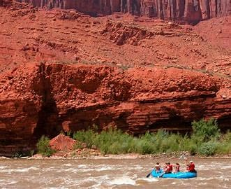
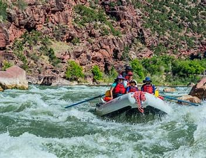
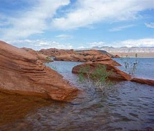
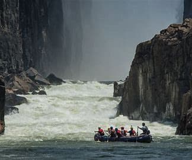
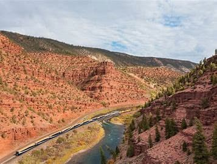
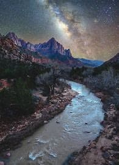

Let the River Call You In and Book With Us Today!
There’s nothing quite like the rush of cold water, the smell of pine in the air, and the thrill of the rapids beneath your raft. If you’ve been craving a real adventure—or just a break from the everyday—we’re here to help you find it.
Click Here to Contact Us and let’s get you out on the river. Whether you're brand new to rafting or a seasoned paddler, we’ve got trips for every level and every kind of wild-hearted explorer.
The Lizard Lounge Float
4 hours total
-Mellow Desert Vibes
- Class 1-2
- Night Float Available
Slow and sandy, this chill float winds through sunbaked canyons where lizards dart across red rock and time moves a little slower. Perfect for families or anyone who wants to drift and daydream. This is the kind of trip where you lean back, trail your fingers in the water, and watch lizards sunbathe on sandstone outcrops. You'll glide past ancient cottonwoods, sandy banks perfect for snack breaks, and maybe even catch a blue heron soaring overhead.
This trip takes about an hour to get to the midway point where we will stop and replenish ourselves with snacks and drinks, The second half is about an hour and a half.
This adventure’s a bit too wild for the little ones—participants must be 7 or older to ride these rapids.
Cougar Creek Crunch, The Hoodoo Hop
6 hours total
- Wild and Winding with Bite -
Class 3-4
*Winter Floats Available*
This adventure’s a bit too wild for the little ones—participants must be 7 or older to ride these rapids.
Tight turns, splashy drops, and dense pine forest. You might not see a cougar, but you’ll definitely feel the thrill of the chase. Add a few guide-who-makes-you-laugh-too-hard moments, and it’s an instant favorite. It starts out mellow—calm waters, dry desert air—and then comes the slip, the flip, and the full-on belly laugh. This stretch of river is known for its surprise drops and “didn’t see that coming” wave trains. Great for groups that want a low-stakes thrill with a few unexpected twists, plus a killer story at the end. On the Hodo Hop, as you hop from one rapid to the next, you’ll be surrounded by towering red rock spires that look like nature tried sculpture for the first time and absolutely nailed it. This is the perfect middle-ground trip: exciting enough to get your adrenaline going, chill enough that you can still spot peregrine falcons overhead and strange rock faces grinning down at you.
This adventure’s a bit too wild for the little ones—participants must be 13 or older to ride these rapids.
Cougar Creek
Hodo Hop
Wild Whiplash,The Inferno Fork, The Canyon Cosmos Cruise
-8-10 hours
-Class 5-7
-Desert Drama Meets River Rage then, Where the Water Boils and the Adventure Blazes next, Stars, Stillness, and Sudden Rapids
This adventure’s a bit too wild for the little ones—participants must be 18 or older to ride these rapids.
Mountain air. Crystal water. Absolute madness. The Wild Whiplash rips through snowmelt fed rivers with zippy turns, foamy rollers, and snowcapped views that’ll have you yelling “LET’S GO!” The Inferno Fork doesn’t just test your skill—it sets it on fire. Steep gradients, explosive hydraulics, and relentless whitewater come together in this beast of a run. You’ll thread the needle through tight slots, plunge over ledges, and emerge soaked and screaming (in joy). The red rock walls seem to radiate heat, the sun bounces off every surface, and the whole thing feels like rafting on Mars—if Mars had one hell of a rivereven before the first rapid. We'll start this one at sunset, end under a blanket of stars. This trip offers a peaceful float mixed with a few unexpected kicks, made all the more surreal by the fading light and night sky. Ideal for stargazers, romantics, or anyone who wants to whisper “whoa” instead of scream it. Watch as canyon walls shift from gold to purple, then dissolve into shadow. And just when you’re lulled into full peace mode—BOOM, one last surprise rapid. The stars always win.Spend a full day exploring the wild heart of the river. We’ll tackle a variety of rapids, enjoy a scenic riverside lunch and dinner, and still have time to soak in the views between paddling. It’s an immersive experience that leaves you sun-kissed, soaked, and grinning from ear to ear.
Wild Whiplash
Inferno Fork
Canyon Cosmos
White Water Rafting Trips
| Destination | Duration | Difficulty Level | Price |
|---|---|---|---|
| The Lizard Lounge Float | 4 hours | Beginners | $35 per person |
| Cougar Creek Crunch, The Hoodoo Hop | 6 hours | Intermediate | $60 per person |
| Wild Whiplash, The Inferno Fork, The Canyon Cosmos Cruise | 8-10 hours | Advanced | $100 per person |